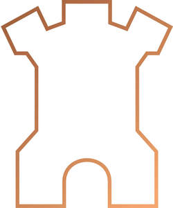

Trade Mark Journal No.2025/025 20 June 2025
UK00004206284 20 May 2025 (16,25,32,33,35,43)
Mark 1
Mark 2

- Class 16
- Beer Mats; Mats for Glasses; Mats of Paper for Beer Glasses; Mats of Paper for Drinking Glasses; Note Pads; Printed Materials; Printed Promotional Materials; Printed Booklets; Packaging Materials; Printed matter and printed publications; Printed advertising materials and posters; Newsletters; Leaflets.
- Class 25
- Clothing, Sport Clothing; Dresses; Polo Neck Jumpers; Jumpers [Pullovers], Short Sleeved or Long Sleeved T-Shirts; T-Shirts; Hats; Sun Hats; Sports Caps and Hats; Baseball Hats; Clothing, footwear and headgear; Uniforms; Jackets; Outerwear; Gilets; Sweatshirts.
- Class 32
- Beer; Non Alcoholic Drinks; Beer Based Beverages; Ales; Porter; Stout; Lager; Non Alcoholic Beer; Cider Non Alcoholic; Shandy; Beer and Brewery Products; Low-Alcohol Beer; De-Alcoholised Beer; Malt Beer; Alcohol Free Beverages; Non-Alcoholic Beverages and Preparations For Making Such Beverages; Alcohol-Free Beers; Low-Alcohol beverages.
- Class 33
- Alcoholic Beverages (except Beer); Wine; Cider; Spirits; Distilled Spirits; Bitters; Sparking Wines.
- Class 35
- Retail Services Relating to Food; Retail Services in Relation to Beer; Retail Services in Relation to Baking Products; Retail Services in Relation to Non-Alcoholic Beverages; Wholesale Services Relating to Food; Wholesale Services Relating to Beer and Beverages; Retail Services in Relation to Beverages; Retail Services in Relation to Baking Products; Retail Services in Relation to Non-Alcoholic Beverages; Loyalty, Incentive and Bonus Program Services; Loyalty Scheme Services; Loyalty Card Services; Organisation and Management of Customer Loyalty Programs; Retail Services relating to Alcoholic Beverages; Retail Services relating to Low-Alcohol Beverages; Retail Services relating to De-Alcoholised Beer; Retail services relating to Clothing, Footwear and Headgear; Retail services relating to Beer Mats.
- Class 43
- Accommodation Services; Bar Services; Bars; Bistro Services; Catering for the Provision of Food and Beverages; Restaurant; Restaurant Services; Tourist Restaurant; Beer Bar Services; Restaurant services incorporating licensed bar facilities; Hospitality services [food and drink]; Hospitality services [accommodation]; Providing food and drink in restaurants and bars; Services for Providing Food and Drink; Temporary Accommodation; Restaurant, Bar and Catering Services and the Provision of Holiday Accommodation; Accommodation Services.
St Austell Brewery Company Limited
Representative: Murrell Associates LLP